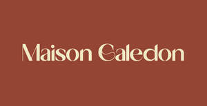

Trade Mark Journal No.2026/008 20 February 2026
UK00004334720 3 February 2026 (18,25,35)

- Class 18
- Leather; Leather and imitation leather; Leather and imitations of leather; Leather cloth; Leather handbags; Leather laces; Synthetic leather; Leather for shoes; Leather briefcases; Leather purses; Leather bags; Leather wallets; Imitation leather; Leather (Imitation -); Leather pouches; Pouches of leather; Moleskin [imitation of leather]; Leather suitcases; Imitation leather bags; Briefcases [leather goods]; Handbags made of leather; All-purpose leather straps; Belts (Leather shoulder -); Bags made of leather; Bags made of imitation leather; Fur; Faux fur; Fake fur; Imitation fur; Luggage; Luggage bags; Travel luggage; Trunks [luggage]; Luggage straps; Luggage tags; Suitcases; Travel baggage; Wheeled suitcases; Travel bags; Wash bags for carrying toiletries; Bags; Purses; Leather coin purses; Coin purses; Pocket wallets; Wallets (Pocket -); Wallets; Card wallets.
- Class 25
- Leather shoes; Leather jackets; Trousers of leather; Leather pants; Leather waistcoats; Leather garments; Leather (Clothing of -); Leather clothing; Clothing of leather; Leather coats; Leather dresses; Leather belts [clothing]; Clothing of imitations of leather; Leather (Clothing of imitations of -); Belts made of leather; Imitation leather dresses; Belts made from imitation leather; Clothing made of leather; Slippers made of leather; Suede jackets; Clothing made of imitation leather; Blouson jackets; Jackets; Sleeveless jackets; Sleeved jackets; Fleece jackets; Windproof jackets; Quilted jackets [clothing]; Jackets [clothing]; Men's and women's jackets, coats, trousers, vests; Sheepskin jackets; Motorcycle jackets; Fur jackets; Trousers; Clothing; Knitwear [clothing]; Ready-to-wear clothing; Furs [clothing]; Gloves as clothing; Clothes; Denims [clothing]; Cashmere clothing; Bottoms [clothing]; Clothing for children; Shoes; Sandals and beach shoes; Footwear; Women's shoes; Footwear for men; Footwear for men and women; Footwear for women; Socks for men; Clothing for men, women and children; Fur coats; Fur hats; Fur coats and jackets; Fake fur hats; Clothing made of fur; Caps; Caps [headwear]; Beanie hats; Hats.
- Class 35
- Retail services connected with the sale of clothing and clothing accessories; Retail services in relation to footwear; Retail services relating to clothing; Retail services in relation to clothing; Retail store services in the field of clothing; Retail services in relation to clothing accessories; Online retail services relating to clothing; Online retail store services relating to clothing; Retail services in relation to fashion accessories; Retail services relating to jewelry; Online retail store services in relation to clothing; Retail services in relation to jewellery; Online retail services relating to jewelry; Retail services relating to furs; Retail services in relation to umbrellas; Retail services in relation to luggage; Retail services in relation to bags; Shop window dressing.
DAY MART LTD